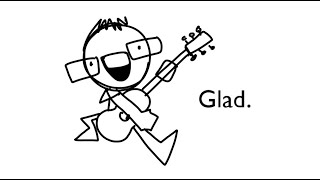

Name
| Published On | November 15, 2024 |
|---|
This song was written in honor of , a close friend and composer of the songs featured in
Lyrics
Remember the day when we first met
Your very first words were 'appreciated'
Didn't think you'd ever stay
And now you've become degenerated
But god, I'm so glad
To have met you in this stupid lifeline
Your music and your post it notes
Your scribbly, clean cut font designs
From late night horror movie streams
And awful FNAF fanfiction (oh god)
Your Catholic life's a living meme
Why can't God save us all?
I'm sorry you had to expirence
The cringe of early MHTP
But I hope you do persue your dreams
And make your history
It's funny sometimes how you just vanisih
For weeks on end cos you're probably playing Valornat
And suddenly you just kinda prosper
As if you've always been here, you asian imposter
But god, were so glad
to have met you in this stupid server
Your doorknob sucking behavior
The hatred for your local pastor
You're lyric writing mastermind
with a kick-ass repertoire
Improvised, yet so refined
Its almost quite bizzare
I really hope you see your worth
Cos youre really quite a special one
Happy fucking birthday Ben
Our roadtrip's just begun
Someday you're going to come to Australia
And really realise how fucked you are
But it's okay cos I'll be with you
In a shitty second hand car
And ohh we can drive
Across the boring fucking orange outback
On a blasting Honda stereo
And a never ending Youtube soundtrack
At the end I must say that i am
Really quite damn proud of you
Cos even though you say you're lost
You always push right through
I wasn't going to write a song
But I didn't know what to fucking draw
So happy ducking birthday Ben
From Marla, me, and all